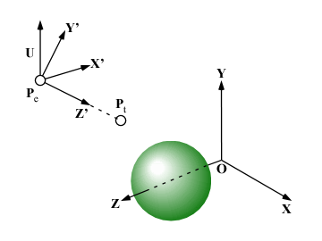
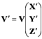

視点の位置は，関数 trace() の第１引数 p0 を設定するだけで変更できる．
一方，第２引数に与える視線の方向ベクトル v は， 視点から目標点に向かうベクトル P1 - P0 に沿って回転させる必要がある． この回転の変換を求めるには，
Z' = (Pt - Pe) / |Pt - Pe|
X' = (U×Z') / |U×Z'|
Y' = Z'×X'
として視野空間の基底ベクトル X'，Y'，Z' を求め，

これを用いて，もとの視線の方向ベクトル V を

により回転した V' を視線の方向ベクトル v に用いる．